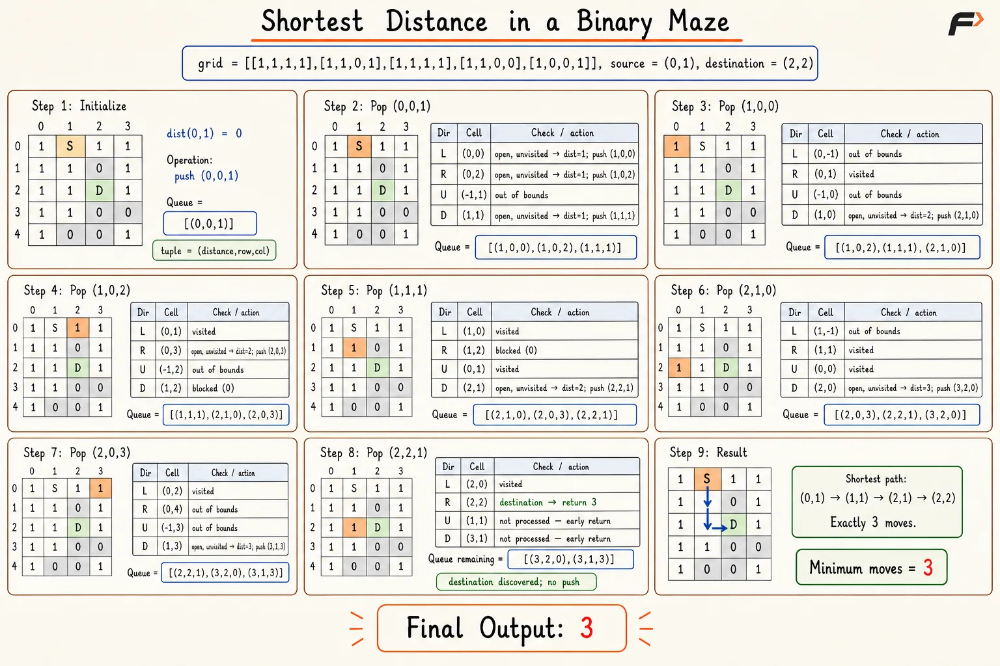

Shortest Distance in a Binary Maze Using BFS
Given an N×M binary maze, a source cell, and a destination cell, find the minimum number of moves needed to reach destination from source.
A cell containing 1 is walkable, while a cell containing 0 is blocked. Movement is allowed one cell at a time in four directions: up, right, down, and left. Return -1 if no valid route exists.
Example 1
Input: grid = [[1,1,1,1],[1,1,0,1],[1,1,1,1],[1,1,0,0],[1,0,0,1]], source = [0,1], destination = [2,2]
Output: 3
Explanation: A shortest route is (0,1)->(1,1)->(2,1)->(2,2), containing three moves.
Example 2
Input: grid = [[1,0,1],[1,0,1],[1,0,1]], source = [0,0], destination = [2,2]
Output: -1
Explanation: The blocked middle column separates source from destination.
Approach
Every walkable maze cell represents a graph vertex, while each valid orthogonal movement represents a unit-cost edge. Breadth First Search explores cells in increasing move count, so the first discovery and distance assignment of the destination gives the shortest distance.
A distance matrix initialized with -1 stores both visitation state and shortest distance. Marking neighbors before queue insertion prevents duplicate processing without modifying the maze.
Algorithm
Store the maze dimensions and return
-1when the source or destination is blocked, as no valid path can exist.Initialize an
N×Mdistance matrix with-1, where-1represents an unvisited cell.Set the source distance to
0, return0when source and destination match, and add the source coordinates to a queue.Continue processing while the queue contains cells and remove the front coordinates for level-order exploration.
Examine the four orthogonal neighbors and ignore out-of-bounds, blocked, or previously visited cells.
Assign
distance[current]+1to every valid neighbor before queue insertion; return the assigned distance immediately after destination discovery.Return
-1when the queue becomes empty without discovering the destination.
Dry Run

shortest-distance-binary-maze-lrud-corrected
Solution
#include <bits/stdc++.h>
using namespace std;
class Solution {
public:
// Return minimum moves from source to destination in a binary maze.
int shortestPath(vector<vector<int>>& grid,
pair<int, int> source,
pair<int, int> destination) {
int rows = grid.size();
int cols = grid[0].size();
// Reject a blocked source or destination.
if (grid[source.first][source.second] == 0 ||
grid[destination.first][destination.second] == 0) {
return -1;
}
// Equal endpoints require zero moves.
if (source == destination) {
return 0;
}
vector<vector<int>> dist(rows, vector<int>(cols, -1));
queue<pair<int, int>> q;
// Start BFS at distance zero.
dist[source.first][source.second] = 0;
q.push(source);
int dRow[4] = {-1, 0, 1, 0};
int dCol[4] = {0, 1, 0, -1};
// Explore walkable cells in increasing distance order.
while (!q.empty()) {
auto [row, col] = q.front();
q.pop();
// Check all four orthogonal neighbors.
for (int direction = 0; direction < 4; direction++) {
int nextRow = row + dRow[direction];
int nextCol = col + dCol[direction];
// Skip cells outside maze boundaries.
if (nextRow < 0 || nextRow >= rows ||
nextCol < 0 || nextCol >= cols) {
continue;
}
// Skip blocked or previously visited cells.
if (grid[nextRow][nextCol] == 0 ||
dist[nextRow][nextCol] != -1) {
continue;
}
int nextDistance = dist[row][col] + 1;
dist[nextRow][nextCol] = nextDistance;
// First destination discovery gives minimum distance.
if (nextRow == destination.first &&
nextCol == destination.second) {
return nextDistance;
}
q.push({nextRow, nextCol});
}
}
// Queue exhaustion means destination is unreachable.
return -1;
}
};
// Driver code.
int main() {
vector<vector<int>> grid = {
{1, 1, 1, 1},
{1, 1, 0, 1},
{1, 1, 1, 1},
{1, 1, 0, 0},
{1, 0, 0, 1}
};
pair<int, int> source = {0, 1};
pair<int, int> destination = {2, 2};
Solution sol;
cout << sol.shortestPath(grid, source, destination);
return 0;
}Complexity Analysis
Time Complexity: O(N×M), where N and M are the numbers of rows and columns; every maze cell enters the queue at most once and checks four neighbors.
Space Complexity: O(N×M), where the distance matrix and BFS queue can each store up to N×M cells.
Interview follow-up Questions
BFS processes unit-cost moves in increasing distance order, so first destination discovery is optimal.